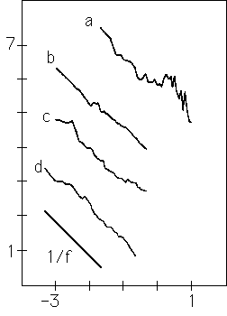
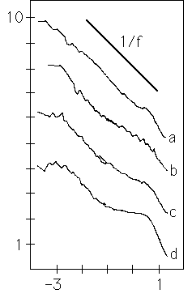

|  |
 |
| On the left, Voss and Clarke plot Log(frequency) on the x-axis, vs
Log(loudness fluctuation power spectrum). |
On the right is a similar plot
for the pitch fluctuation power spectrum, a rough indicator of melody. |
| The graphs are |
The graphs are |
| (a) Scott Joplin piano rags, |
(a) classical, |
| (b) a classical radio station, |
(b) jazz and blues, |
| (c) a rock radio station, and |
(c) rock, and |
| (d) a news and talk radio station. |
(d) news and talk, |
| Below 1 Hz, the match to the reference 1/f graph is good. |
all averaged over about 12 hours. |
| For (a), the signal was averaged over an entire recording. |
| Joplin rags have a strong rhythm, so the power spectrum has a considerable amount of
structure between 1 and 10 HZ. |
| Below 1 Hz, we are detecting long-range correlations in the
music, and the spectrum agrees well with 1/f. |
|
Again, the match with 1/f is good, though the talk station exhibits
peaks at the time scale of a single sound, and at the time scale of the average
time a person speaks. |
| The rock graph (c) begins to flatten out on time scales
longer than a single composition. |
|
| Classical compositions tend to be longer; the data presented do
not extend beyond the average length. |
|